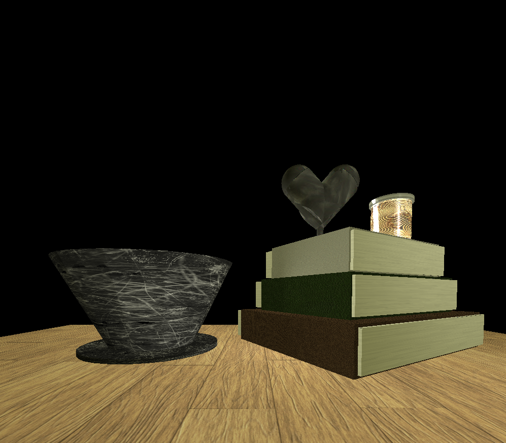
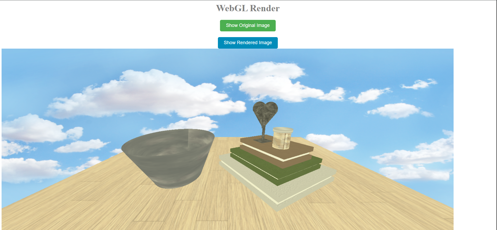
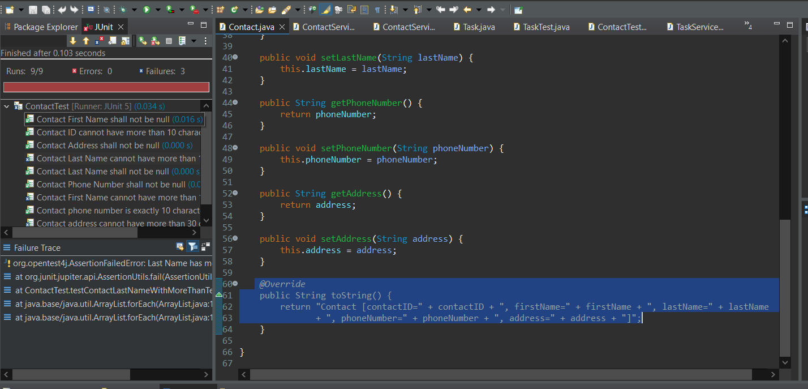
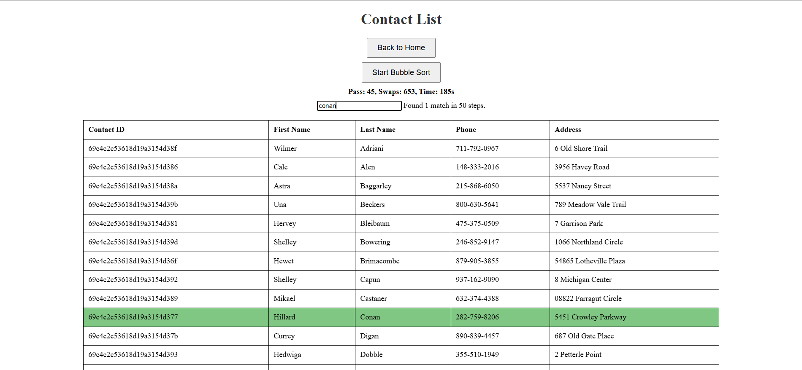
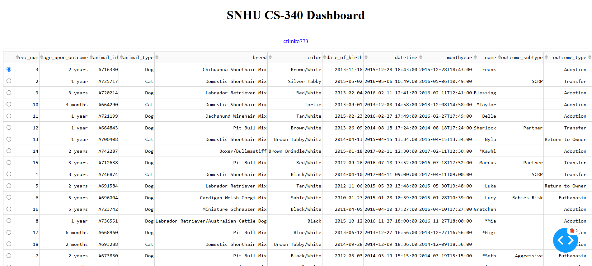
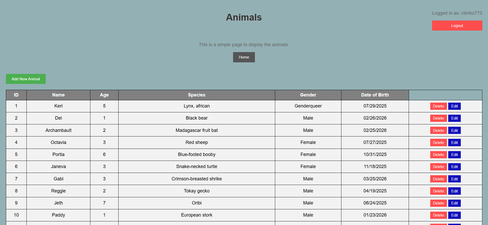

Colin Timko
GitHub: ctimko773
Informal Code Review: Here
{PLACEHOLDER} ePortfolio used to demonstrate three different artifacts. The artifacts were originally created for different classes but were modified in different ways for the portfolio. Each artifact has a card that shows both the original and enhanced versions of the artifact. There is also buttons that link to each GitHub repository for more information about the enhanced project as well as an accompenying narrative that delves into greater detail on making each enhanced artifact.
Professional Self Assessment
{PLACEHOLDER}I am proud of the work that I have done for this portfolio. I have put a lot of effort into creating and modifying the artifacts to make them the best that they can be. I have also learned a lot about how to create a portfolio and how to present my work in a professional way.

The original artifacts was a 3D render using C++ and OpenGL. The image was recreated using a pre-existing stock photo of a simple coffee table with items on it.

The enhanced version for this artifact was using the same image but was created instead using WebGL and is displayed on a local server and webpage as opposed to in the terminal. There is also functionality on the webpage to switch between the stock photo and the WebGL render.

The original version of this artifact was basic Java classes that would take different parameters and use JUnit to test those parameters. The classes were for tasks, appointments, and contacts and the parameters were things like name, description, etc. The original project was solely used for testing purposes and had no display or output.

The enhancements made to the original artifact was to make an interface so the users could see the data that would have been required in the orignal. I created an API using SpringBoot and created an HTML page that allows the user to see the data from the original java. For each of the databases on their own individual pages I added a sort and search algorithm. I used bubble sort and linear search, these are not the fastest methods but they give the best display for the user. There is also a display that shows the amount of time it took to either sort or search the data so the user can get a better understanding of the time complexity of the algorithms.

The orignal artifact was a database that used python functions in order to perform CRUD operation (CREATE, READ, UPDATE, DELETE) on a database of animals. The functions were made using pure python code and the database was displayed using a Dash server. The original artifact did not have any authentication or login and the database was viewable by anyone who accessed the webpage.

The enhanced version of this artifact is a web application that uses a flask backend with a basic use of HTML, CSS, and JavaScript as well as MongoDB to store the animal information as well as the credentials of the users. The database is displayed on a local server and allows users to perform all the CRUD actions. A big part of the enhancements was adding a login function which allows users to create an account using a username and password and the credentials are stored in a database with the password being hashed. The database cannot be viewed by public users only those who have signed in.
| Languages | Frameworks | Tools |
|---|---|---|
| HTML | Bootstrap | Git |
| CSS | React | VS Code |
| JavaScript | Angular | Jira |
| Python | Django |